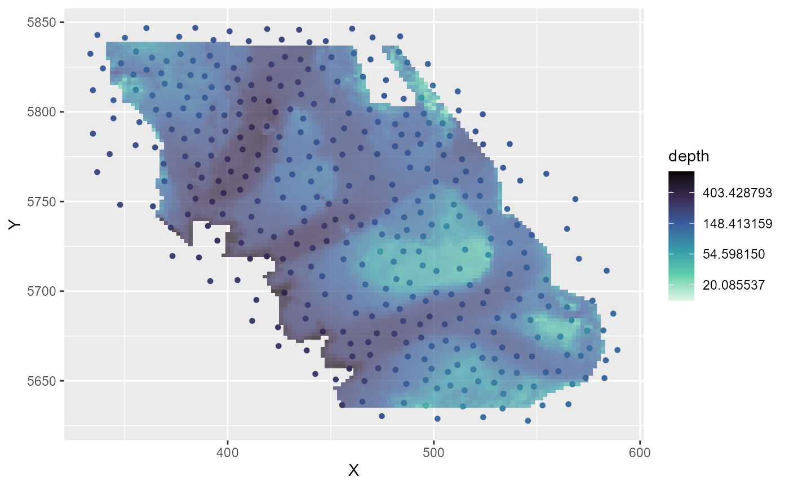

Interpolates covariate values from a data frame to mesh vertices using inverse distance weighting (IDW). Uses gstat for exact IDW interpolation by default, with an optional high-performance RANN method for very large datasets.
Usage
add_mesh_covariates(
mesh,
data,
covariates,
coords,
power = 2,
method = c("gstat", "rann"),
k = 10,
barrier = NULL
)Arguments
- mesh
A mesh object from fmesher or sdmTMB (for
sdmTMB::sdmTMB()models only).- data
A data frame with coordinate columns and covariate columns, or an sf object.
- covariates
Character vector of covariate column names to interpolate.
- coords
Character vector of coordinate column names. Ignored if data is an sf object.
- power
Numeric power parameter for inverse distance weighting (default
2; Euclidean squared decay).- method
Interpolation method. Options:
"gstat"(default, exact inverse distance weighting using gstat package) or"rann"(fast k-nearest neighbours inverse distance weighting using RANN package for very large datasets).- k
Number of nearest neighbours to use for
"rann"method (default10). Ignored for"gstat"method.- barrier
Optional sf polygon object defining barrier regions. If provided, adds a logical
barriercolumn to bothvertex_covariatesandtriangle_covariates. E.g., in the case of modelling fish in the ocean,TRUErepresents vertices/triangle centers over land andFALSErepresents vertices/triangle centers over water. For triangles, also adds abarrier_proportioncolumn indicating the proportion of each triangle's area that intersects with the barrier polygon (0 = no intersection, 1 = triangle completely within barrier).
Value
Modified mesh object with vertex_covariates and triangle_covariates
elements added and class vertex_cov added. The vertex_covariates data frame
contains covariate values interpolated at mesh vertices, and triangle_covariates
contains covariate values interpolated at triangle centers.
Examples
library(sdmTMB)
#>
#> Attaching package: ‘sdmTMB’
#> The following objects are masked from ‘package:tinyVAST’:
#>
#> cAIC, delta_gamma, delta_lognormal, project
library(sf)
#> Linking to GEOS 3.13.1, GDAL 3.11.0, PROJ 9.6.0; sf_use_s2() is TRUE
# Regular data frame
mesh <- fmesher::fm_mesh_2d(pcod[, c("X", "Y")], cutoff = 10)
mesh_with_covs <- add_mesh_covariates(
mesh,
data = qcs_grid,
covariates = c("depth"),
coords = c("X", "Y")
)
head(mesh_with_covs$vertex_covariates)
#> depth
#> 1 187.1538
#> 2 130.0879
#> 3 131.7996
#> 4 146.7183
#> 5 165.7199
#> 6 157.8532
# Visualize what we've done:
if (requireNamespace("ggplot2", quietly = TRUE)) {
library(ggplot2)
df <- as.data.frame(mesh_with_covs$loc[,1:2])
df <- cbind(df, mesh_with_covs$vertex_covariates)
ggplot() +
geom_raster(data = qcs_grid, aes(X, Y, fill = depth), alpha = 0.7) +
geom_point( data = df, aes(V1, V2, fill = depth),
colour = "#00000010", pch = 21) +
scale_fill_viridis_c(option = "G", trans = "log", direction = -1)
df_tri <- mesh_with_covs$triangle_covariates
ggplot() +
geom_raster( data = qcs_grid, aes(X, Y, fill = depth), alpha = 0.7) +
geom_point( data = df_tri, aes(x = .x_triangle, y = .y_triangle, fill = depth),
colour = "#00000010", pch = 21) +
scale_fill_viridis_c(option = "G", trans = "log", direction = -1)
}

# Piped version
mesh_with_covs <- fmesher::fm_mesh_2d(pcod[, c("X", "Y")], cutoff = 10) |>
add_mesh_covariates(
qcs_grid,
covariates = c("depth_scaled", "depth_scaled2"),
coords = c("X", "Y")
)
# With sf objects (coords automatically extracted)
pcod_sf <- st_as_sf(pcod, coords = c("X", "Y"))
grid_sf <- st_as_sf(qcs_grid, coords = c("X", "Y"))
mesh_sf <- fmesher::fm_mesh_2d(pcod_sf, cutoff = 10) |>
add_mesh_covariates(grid_sf, c("depth"))
# With sdmTMB mesh (coordinate names and mesh automatically detected)
mesh <- make_mesh(pcod, c("X", "Y"), cutoff = 10) |>
add_mesh_covariates(qcs_grid, c("depth"))
# Use RANN method for very large datasets (much faster)
mesh_fast <- fmesher::fm_mesh_2d(pcod[, c("X", "Y")], cutoff = 10) |>
add_mesh_covariates(
qcs_grid,
covariates = c("depth_scaled", "depth_scaled2"),
coords = c("X", "Y"),
method = "rann",
k = 15
)